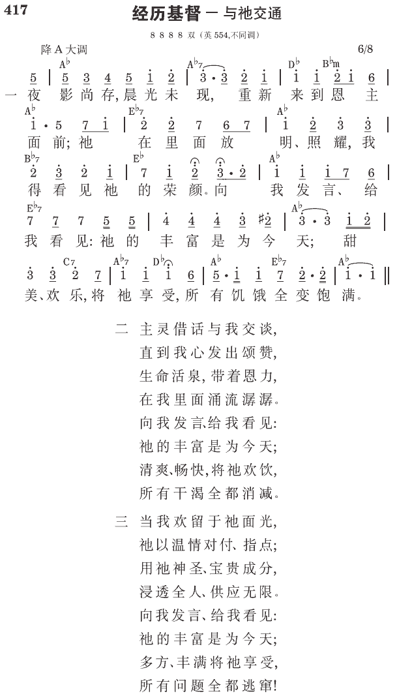

箴4:18 义人的途径好像黎明的光，越照越明，直到日午。
在早晨得复兴
早晨的时间眨眼即过，一个钟头很快就过去了，所以主的话说，“要赎回光阴。”（弗五16）在一天当中最需要赎回的一段时间，就是早晨六点到七点。这一个小时中的每一秒都值钱，我们要把它赎回来 （《新路生机的实行》四一页）。
赎回光阴，就是把握每一有利的时机。这就是行事为人像有智慧的人。我们必须赎回光阴，因为日子邪恶。在这邪恶的世代（加一4），每一日都是邪恶的，满了邪恶的事，叫我们的时间变为无效、受缩减、被夺去。所以，我们的行事为人必须有智慧，才能赎回光阴，把握每一可用的时机。如果我们不把握每一时机，我们的光阴就会浪费了。许多邪恶的事会进来迷惑我们，打岔我们。我们也许被电话、信件、或访客所打岔。我们正在享受主的面光时，可能会突然被一个消极的电话攻击。因着日子邪恶，我们必须儆醒的利用每一时机（《以弗所书生命读经》五二三页）。
生活跟着太阳走
基督徒的复兴不是在午后，更不是在日落，乃是在清晨。基督徒的人生不是日落西山，乃是旭日东升，并且我们就是太阳。士师记五章三十一节说，“愿爱你的人如日头出现，光辉烈烈。”箴言四章十八节说，“义人的途径好像黎明的光，越照越明，直到日午。”基督徒的生活应该跟着太阳走，太阳上升了，我们也上升了，我们是一直上升，直到日午。基督徒的生活是没有下午的，我们无论进到人群中，或是进到聚会中，都该把黎明的光带给人。因此每一个早晨，不管你多忙，都要花时间操练灵。
所以早晨的时间非常宝贵，我们最好尽量少花在别的地方，多把时间用在祷读上面。为了节省时间，我自己早晨起来穿衣的时候，就开始呼求主名，祷读主话了。若是这时候你太太还没有睡醒，你不要大喊大叫，你可以在里面祷告。你穿衬衫的时候，就可以在里面祷读昨天的经节：“起初，神，创造，诸天与地。”在你漱洗的时候，你也可以祷读。你可以同时作两件事，也许刚开始的时候你不太习惯，但是作来作去就习惯了。一个早上你有半小时，甚至五十分钟在那里又祷告，又读主的话。末了，把祷告和读经调在一起，你的灵就活起来，在这一天的清晨，你全人就有一个复兴
（《新路生机的实行》四五页）。
个人的晨兴
主在出埃及三十四章二至三节对摩西的嘱咐，表明我们都需要有一段时间单独接触主，我们都需要私下与主相会。在单独与主同在的时间里，我们不该带着任何的人、事、物。清晨我们到主面前去，应该单独去见祂，甚至必须把我们的丈夫或妻子留下。有些弟兄无论往哪里去，都习惯带着妻子同去。这种习惯很好；然而，到了在山顶上与主相会的时间，弟兄就该将妻子留在山脚下。我们这样与主相会，必须将一切人、事、物尽都忘掉。忘掉你的财产、教育、职业、前途。不要带着任何的人、事、物，要单独去见主（《出埃及记生命读经》二二四九至二二五〇页）。
我们在团体生活中，尤其是年轻人，许多人都没有个人祷告的时间，他们只有团体的祷告。我承认个人祷告的时间无法顶替团体的时间。如果你自己不直接或私下去遇见主，你和主之间的关系就不够实际，无法细致（生命信息上册，一八页）。
团体的晨兴
我们可以用电话和所接触的人有十分钟的晨兴。一个人可以排在早上六点十五分，下一个人可以排在六点半，再下一个人可以排在六点四十五分。早上一小时之内，就可以接触三个人。你可以每天早上接触同样的三个人，与他们一同祷读，与他们有交通，并与他们一同简单地享受主。在三个月之内，你可以接触同一个人至少八十次。在这种持续的接触三个月之后，这些人就能为着主的权益被得着（《长老训练⑾长老职分与神命定之路㈢》八六至八七页）。
复兴带来变化
这种日日更新的复兴，是带着变化的。罗马十二章二节：“借着心思的更新而变化。”林后三章十八节也说，“我们众人既然以没有帕子遮蔽的脸，好像镜子观看并返照主的荣光，就渐渐变化成为与祂同样的形像，从荣耀到荣耀，乃是从主灵变化成的。”这给我们看见，变化是借着观看主而来的。我们就像镜子，以没有帕子遮蔽的脸观看主；我们越观看祂，就越返照主的荣光，渐渐变成主的形像，从一种程度的荣耀，到另一种程度的荣耀。这乃是从主灵变化成的，不仅是复兴，更是变化。所以，每天早晨有新的复兴，就是每天早晨有新的变化。只要我们一生的年日都在这样的变化中，我们就能在主的生命里长大，以致成熟。这种复兴、更新、变化，乃是我们众人今日的需要
（《当前的角声与当前的需要》五一页）。
参读：《新路生机的实行》第四篇；《以弗所书生命读经》第五十一篇；《出埃及记生命读经》第一百七十八篇；《生命信息》第二章；《长老训练⑾长老职分与神命定之路㈢》第九章；《当前的角声与当前的需要》第四篇。
